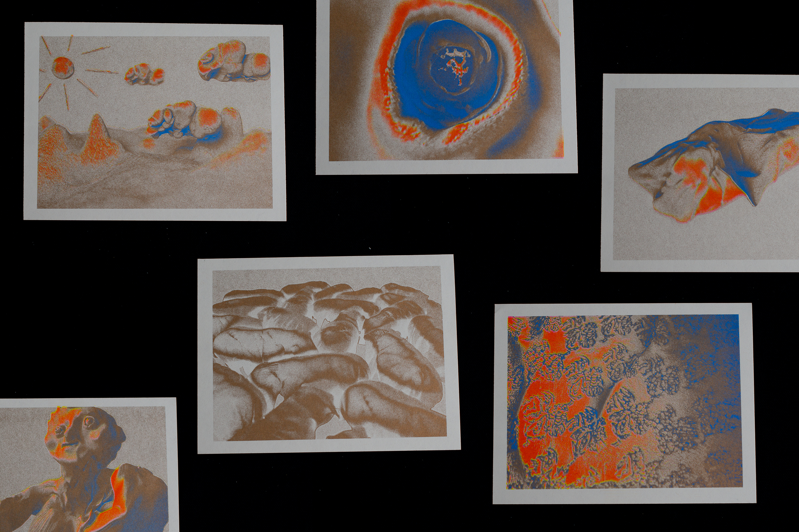

Risograph is a print process which combines the best of digital and traditional print: a hand-made look and feel with the speed, low-cost and efficiency of a modern printer. Though it looks on the outside like a copy machine, the Risograph is not a copier. It is a duplicator (think mimeograph) with a process like screen printing. The Riso duplicator internally creates a stencil that is laid onto a drum filled with ink. The drum then spins at high speed, forcing the ink through the stencil onto the paper, where it is absorbed creating a unique look and texture.
Risograph Printing is a digital duplicator process that has unique characteristics and always contains slight imperfections. These include:
Smudging. Risograph ink is made from a combination of environmentally friendly soy oil, water and pigment, the prints are reminiscent of newspaper ink and it is possible to smudge the ink.
Uneven coverage. Large flat areas of solid ink coverage are likely to show some slight variations, which can include pinholes and flooding.
Registration. Riso is like screen printing in that each ink color is layered on separately. A single piece of paper will run through our machines several times for multi-color projects and the overlap of colors can be irregular.
Tire marks. When a paper is fed through the machine multiple times and it is heavily inked, the paper feeder rollers may leave tire marks on the pages face or end sheets.
We offer a variety of printing and finishing services. The Riso machine can accommodate up to 11" x 17" sized paper to create the following projects: Posters, flyers, books, art prints, menus, maps, folded cards, envelopes, zines, brochures, and much more.